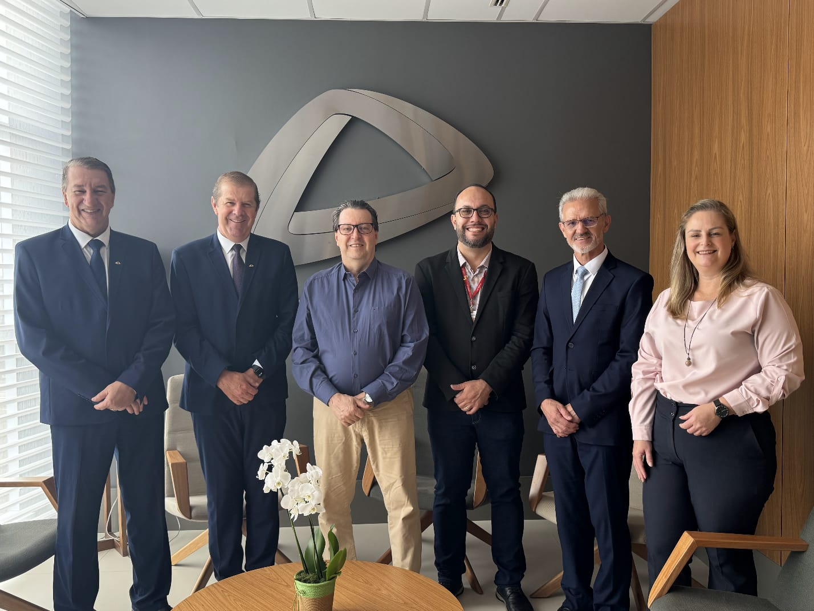
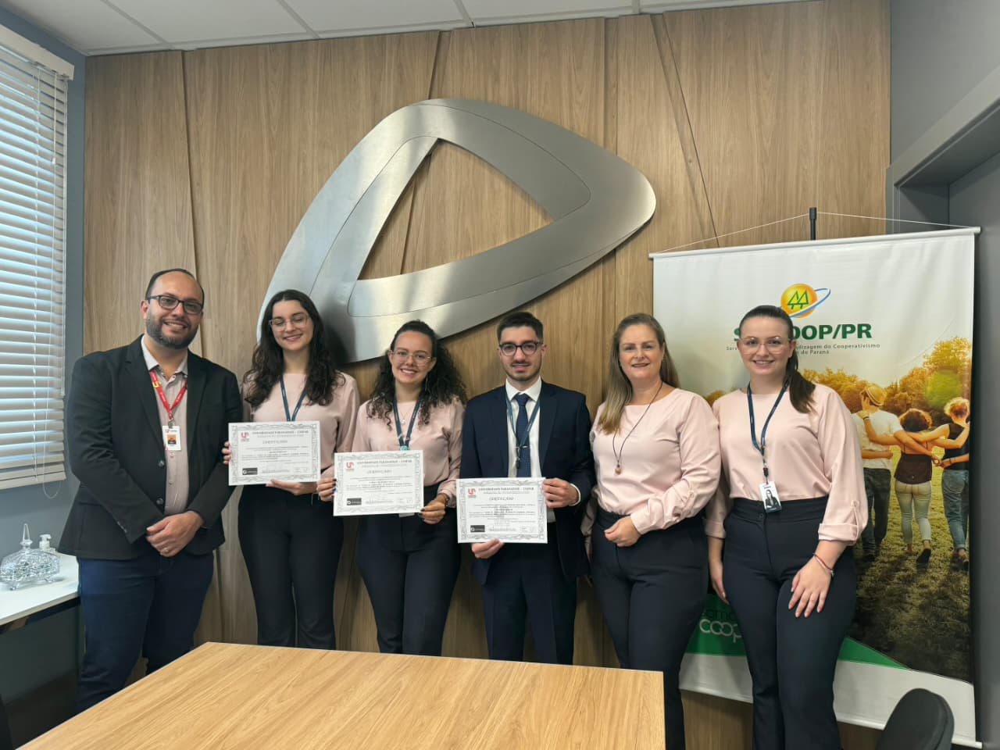
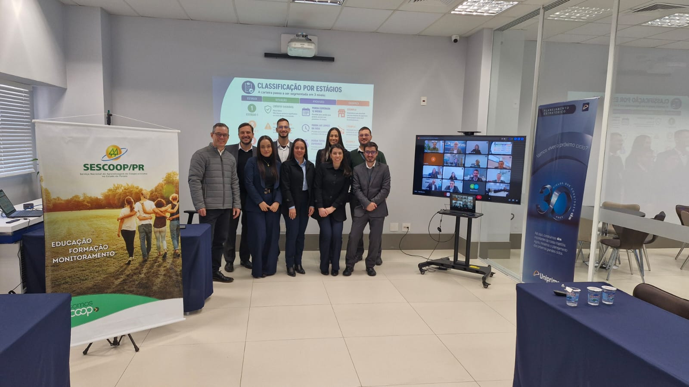
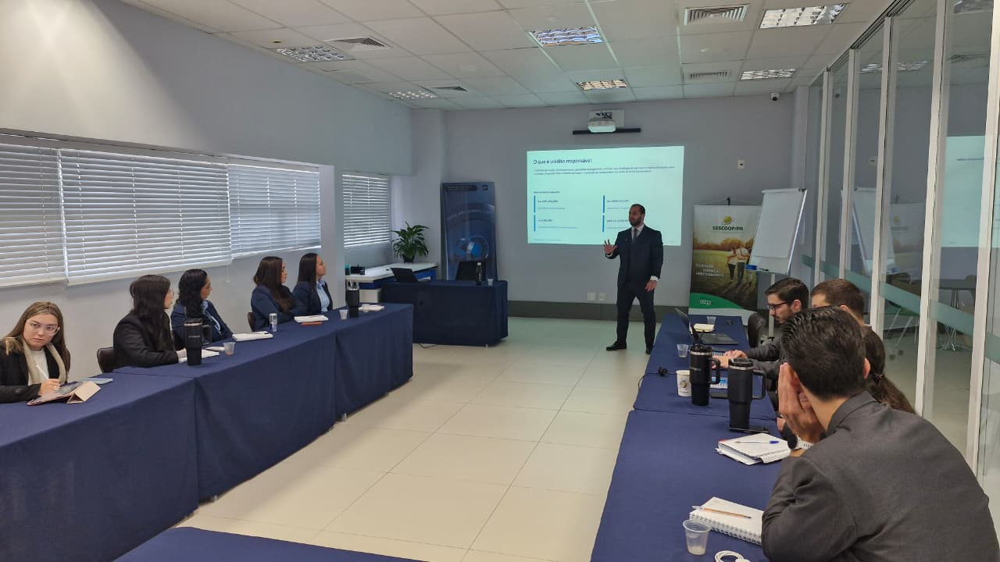
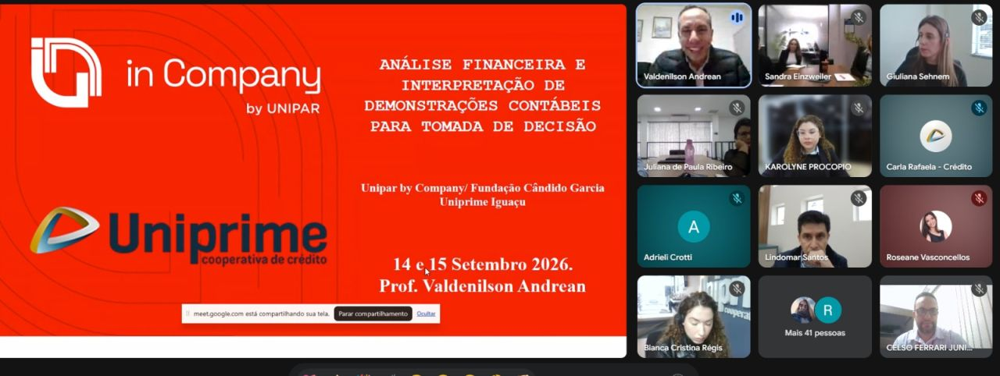

Análise de Crédito, Gestão de Risco e Conformidade Regulatória
Uniprime Pioneira
Programa de capacitação desenvolvido pela Fundação Cândido Garcia e pela Unipar In Company, em parceria com o Professor Cláudio Treinamentos, voltado ao desenvolvimento técnico de colaboradores e gerentes da Uniprime Pioneira em análise de crédito, gestão de riscos e conformidade regulatória.

Conhecimento para fortalecer a gestão e a segurança das cooperativas de crédito
A atuação no sistema cooperativo de crédito exige profissionais cada vez mais preparados para analisar cenários, avaliar riscos, compreender normas e tomar decisões com segurança e responsabilidade.
Nesse contexto, a Fundação Cândido Garcia e a Unipar In Company realizaram, na sede administrativa da Uniprime Pioneira, o curso “Análise de Crédito, Gestão de Risco e Conformidade Regulatória”, em parceria com o Professor Cláudio Treinamentos.
A capacitação foi estruturada para proporcionar atualização técnica e ampliar a preparação dos profissionais diante dos desafios regulatórios e operacionais das instituições financeiras cooperativas.
Realizado em formato híbrido, o treinamento possibilitou a participação de colaboradores e gerentes dos estados do Mato Grosso, Mato Grosso do Sul e Rio Grande do Sul, promovendo também integração entre profissionais de diferentes regiões.
Decisões mais qualificadas para uma gestão responsável
A análise de crédito é uma das atividades fundamentais para a sustentabilidade das instituições financeiras cooperativas.
Uma avaliação adequada exige conhecimento técnico, capacidade de análise e compreensão dos diferentes fatores que podem influenciar uma operação de crédito.
Durante a formação, os participantes tiveram a oportunidade de aprofundar conhecimentos relacionados à análise e à tomada de decisão, fortalecendo competências importantes para uma atuação mais segura e estratégica.
O objetivo é contribuir para que os profissionais estejam cada vez mais preparados para avaliar operações, identificar cenários e apoiar decisões responsáveis.

Antecipar cenários para proteger o negócio
A gestão de riscos ocupa posição estratégica nas organizações financeiras.
Identificar, avaliar e acompanhar riscos permite que as instituições estejam mais preparadas para enfrentar diferentes cenários e tomar decisões com maior segurança.
A capacitação proporcionou reflexões sobre a importância da gestão de riscos no cotidiano das cooperativas de crédito, aproximando conceitos técnicos da realidade profissional dos participantes.
Nesse contexto, conhecimento e prevenção tornam-se elementos essenciais para uma gestão mais eficiente e sustentável.

Conhecimento para atuar em um ambiente cada vez mais regulado
O ambiente financeiro exige atenção permanente às normas, procedimentos e mudanças regulatórias.
Para os profissionais das cooperativas de crédito, compreender essas exigências é fundamental para garantir que processos e decisões estejam alinhados às responsabilidades institucionais.
A formação buscou ampliar a compreensão dos participantes sobre conformidade regulatória e sua importância para a segurança, a governança e a sustentabilidade das organizações.
Mais do que conhecer normas, é necessário compreender seus impactos sobre a operação e incorporá-las à rotina de gestão.

Atualização técnica diante das transformações regulatórias
A Resolução 4.966 representa um tema de grande relevância para as instituições financeiras e cooperativas de crédito.
Por isso, a atualização dos profissionais é fundamental para compreender os impactos da regulamentação e os desafios relacionados à sua aplicação.
O treinamento criou um espaço para aprofundamento técnico, discussão e atualização, contribuindo para que os participantes possam compreender melhor as mudanças e seus reflexos na gestão das instituições.
Tecnologia aproximando profissionais e conhecimento
Um dos diferenciais do projeto foi a realização em formato híbrido.
O modelo permitiu reunir profissionais presencialmente na sede administrativa da Uniprime Pioneira e, simultaneamente, colaboradores e gerentes de diferentes estados.
A participação de profissionais do Mato Grosso, Mato Grosso do Sul e Rio Grande do Sul ampliou a troca de experiências e fortaleceu a integração entre diferentes realidades do sistema cooperativo de crédito.
A tecnologia, nesse contexto, tornou-se uma ferramenta para ampliar o alcance da formação e conectar profissionais em torno de objetivos comuns.
Conhecimento conectado aos desafios das cooperativas
A proposta da formação foi aproximar conhecimento técnico e realidade profissional.
Os temas abordados estão diretamente relacionados às atividades e aos desafios enfrentados diariamente pelos profissionais das cooperativas de crédito.
A participação do Professor Cláudio Treinamentos contribuiu para proporcionar uma formação especializada, com foco em temas essenciais para a atuação dos participantes.
A troca de experiências e o contato com diferentes perspectivas também fortaleceram o processo de aprendizagem.
Uma parceria pela qualificação do sistema cooperativo
A realização do projeto demonstra a importância da união entre instituições para promover o desenvolvimento profissional.
A Unipar In Company e a Fundação Cândido Garcia contribuíram com sua experiência na estruturação e realização de iniciativas de educação corporativa.
A Uniprime Pioneira aproximou a formação das necessidades concretas de seus profissionais, fortalecendo a conexão entre conhecimento e prática.
O projeto também foi construído em conjunto com o Sistema Ocepar, reforçando o compromisso com a qualificação e o desenvolvimento do cooperativismo.
Um agradecimento especial à direção da Uniprime Pioneira pela confiança e parceria, bem como a Matheus Fritsch e Fabiane Rosicley Cielo, fundamentais para a viabilização dessa iniciativa.
Desenvolvimento técnico para resultados sustentáveis
A experiência realizada com a Uniprime Pioneira reforça o papel da educação corporativa como instrumento estratégico para o desenvolvimento das organizações.
Em setores que passam por constantes transformações regulatórias e operacionais, investir na qualificação dos profissionais é também investir na segurança, na eficiência e na sustentabilidade do negócio.
A formação contínua permite que os profissionais acompanhem as mudanças, desenvolvam novas competências e estejam preparados para tomar decisões cada vez mais qualificadas.
Fortalecimento técnico e evolução da gestão cooperativa
A experiência construída entre a Uniprime Pioneira, a Unipar In Company e as organizações participantes reforça o papel da educação como instrumento de desenvolvimento do cooperativismo.
Ao criar oportunidades de formação e qualificação, essas iniciativas contribuem para desenvolver profissionais mais preparados, fortalecer organizações e ampliar a capacidade de atuação diante dos desafios do mercado e do sistema cooperativista.
Mais do que transmitir conhecimento, a proposta é criar experiências de aprendizagem que gerem novas perspectivas, novas competências e novas possibilidades para profissionais e organizações.
Entre as iniciativas desenvolvidas está o treinamento “Análise de Crédito, Gestão de Risco e Conformidade Regulatória”, conduzido pelo professor Cláudio Treinamentos e realizado em parceria entre a Fundação Cândido Garcia, a Unipar In Company e a Uniprime Pioneira.
A formação foi voltada ao desenvolvimento de competências relacionadas à análise de crédito, à gestão de riscos e à conformidade regulatória, contribuindo para que os profissionais possam compreender melhor as informações financeiras e utilizá-las como apoio para decisões mais qualificadas.
A iniciativa também reforça a importância da aproximação entre a universidade e o mundo do trabalho, promovendo conhecimento aplicado, desenvolvimento profissional e geração de valor para as organizações.
A parceria entre as instituições demonstra como a educação corporativa pode contribuir para fortalecer pessoas, aprimorar competências e apoiar o desenvolvimento contínuo do cooperativismo.
